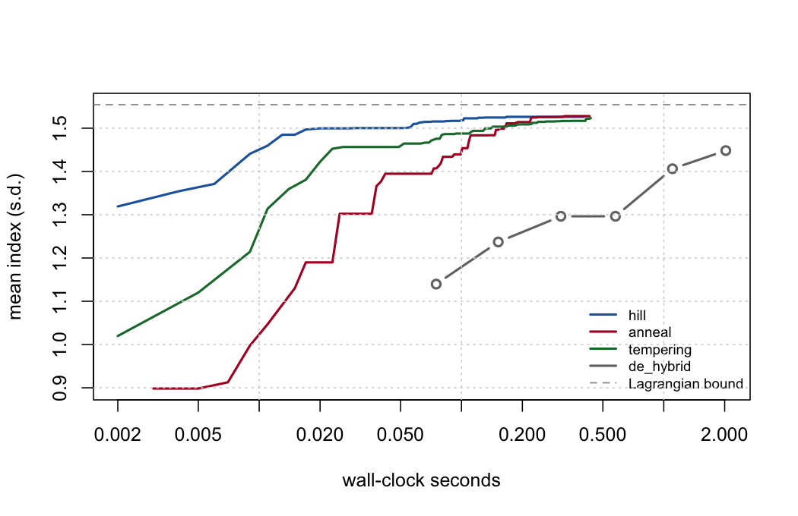
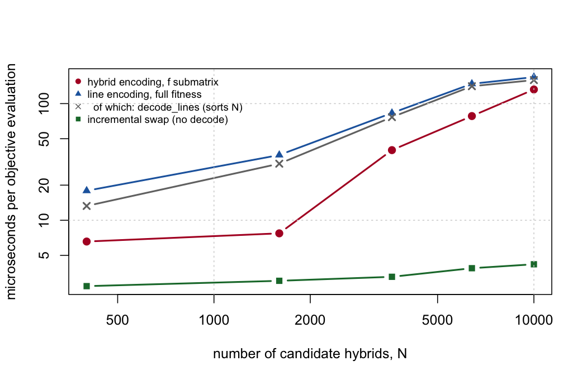

V <- cbind(ctx$X, 1 - ctx$X)
c(max_abs_difference = max(abs(ctx$f - tcrossprod(V) / ctx$m)),
min_eigenvalue = min(eigen(ctx$f, symmetric = TRUE, only.values = TRUE)$values))
#> max_abs_difference min_eigenvalue
#> 0.000000e+00 -4.275667e-1312 Advanced selection: structure, bounds and scale
Chapter 11 stops at a warm-started differential evolution. That is a reasonable place to stop if the problem is a black box. It is not one. This chapter names the structure, and then spends it: on cheaper moves, on genuine approximation guarantees, on a bound that is actually a bound, and on an oracle that says how far from optimal the heuristics really are.
The target throughout is the scale the method has to survive: 200 hybrids chosen from 10,000, a full factorial of 100 by 100 lines.
12.1 Three facts about this problem
Everything below follows from three properties of f, each of which takes three lines to check and none of which has been stated in this book so far.
12.1.1 f is a Gram matrix
Molecular coancestry is \(f_{ij} = \frac{1}{m}\sum_k [x_{ik}x_{jk} + (1-x_{ik})(1-x_{jk})]\), which is an inner product of the stacked vectors \([\mathbf{x}_i;\, \mathbf{1}-\mathbf{x}_i]\). So f is not merely symmetric, it is a Gram matrix, exactly:
Two consequences carry the rest of the chapter. First, \(\mathbf{c}'\mathbf{f}\mathbf{c}\) is a convex quadratic, so the diversity budget is a convex constraint – which is what makes the exact method of Section 12.6 possible at all. Second, \(d_{ij} = f_{ii} + f_{jj} - 2f_{ij}\) is a squared Euclidean distance, hence a distance of negative type, which is the precise hypothesis the strongest approximation results require.
12.1.2 Maximising diversity is minimising the submatrix sum
\(\theta_S = \frac{1}{n^2}\sum_{i,j \in S} f_{ij}\), and at fixed \(n\) the normaliser is a constant:
s <- sel_greedy(ctx, n_sel, w = 1)
c(theta_times_n2 = theta_group(s, ctx) * n_sel^2,
submatrix_sum = sum(ctx$f[s, s]),
difference = theta_group(s, ctx) * n_sel^2 - sum(ctx$f[s, s]))
#> theta_times_n2 submatrix_sum difference
#> 2.475329e+03 2.475328e+03 1.818989e-12So the objective is \(\lambda \sum_{i \in S} u_i - \sum_{i,j \in S} f_{ij}\): a modular term plus a submodular one, since the marginal cost of adding a hybrid grows with the set. Writing the same thing through \(d_{ij}\), \(\sum_{i<j} d_{ij} = n\,\mathrm{tr}(f_S) - n^2\theta_S\), identifies it as the max-sum diversification problem of Borodin et al. (2017) – which nobody in the plant literature seems to have noticed it is.
12.1.3 The per-line cap is a partition matroid
“No line may parent more than max_use of the selected hybrids” is one partition matroid per heterotic pool. Together with the cardinality constraint that is an intersection of matroids – not an arbitrary combinatorial restriction, but the single best-understood constraint class in discrete optimisation.
NoteWhy naming the structure is worth a section
Three named properties buy three concrete things, and it is worth being blunt about which is which.
| Property | What it buys | Worth in practice |
|---|---|---|
f positive semi-definite |
a convex constraint, hence valid gradient cuts and a valid Lagrangian bound | large – Section 12.4 is a correction, not an ornament |
| submodular plus modular objective | \(1 - 1/e\) under cardinality (Nemhauser et al. 1978), \(1/(p+1)\) under \(p\) matroids (Fisher et al. 1978); a PTAS for negative-type distances under a matroid (Cevallos et al. 2016) | small – worst-case bounds, and the measured gap is around 1% |
| line collapse \(\theta = \mathbf{w}'\mathbf{f}^L\mathbf{w}\) | memory \(O(N^2) \to O(L^2)\), search dimension \(N \to L\), and an \(O(L)\) swap | large – 0.745 GiB against 0.3 MiB, and the swap is what makes local search affordable |
12.2 What lazy greedy would not buy
The obvious first move on a submodular objective is the lazy greedy of Nemhauser et al. (1978): keep stale marginal gains in a priority queue and re-evaluate only the top one. It is the standard accelerator, and here it is worthless.
sel_greedy() already carries the running vector s of coancestry sums against the chosen set, so every candidate’s marginal gain is \(O(1)\) and the whole step is one vectorised pass. Lazy evaluation optimises precisely the cost that is already free. Reaching for it would add a heap, add bugs, and save nothing.
The guarantee is worth stating even so, because it settles a question rather than improving a number: greedy under our constraints cannot do worse than \(1/(p+1)\) of optimal. Section 12.6 measures what it actually does.
12.3 The move that was already paid for
Section 8.1 established \(\theta_S = \mathbf{w}'\mathbf{f}^L\mathbf{w}\), and theta_state()/theta_swap() have been in the package ever since, maintaining group coancestry in \(O(L)\) per swap. Nothing consumed them. Chapter 11 even ends with a callout recommending local search, citing De Beukelaer et al. (2018) – and then does not run one.
theta_swap
#> function (st, out_h, in_h, ctx)
#> {
#> cnt <- st$cnt
#> v <- st$v
#> po <- ctx$parents[out_h, ]
#> pi_ <- ctx$parents[in_h, ]
#> for (a in po) {
#> cnt[a] <- cnt[a] - 1L
#> v <- v - ctx$fL[, a]
#> }
#> for (a in pi_) {
#> cnt[a] <- cnt[a] + 1L
#> v <- v + ctx$fL[, a]
#> }
#> s <- st$s
#> list(cnt = cnt, v = v, s = s, theta = sum(cnt * v)/(s * s))
#> }
#> <bytecode: 0x903c59850>
#> <environment: namespace:hybdiv>Four rank-one column updates. No N x N matrix is touched, and the cost depends on neither \(N\) nor \(m\).
That last property is the one that matters, and it is worth being precise about where the saving actually comes from, because the obvious answer is wrong. The line encoding does not make an evaluation cheaper. Taking two rows of Section 12.7’s table:
| route | at \(N = 3600\) | at \(N = 10{,}000\) |
|---|---|---|
hybrid encoding, mean(f[idx, idx]) |
40 us | 132 us |
| line encoding, full fitness | 83 us | 169 us |
of which decode_lines(), which sorts all \(N\) candidates |
77 us | 159 us |
| incremental swap, no decode at all | 3.3 us | 4.2 us |
The line encoding is slower per evaluation, because decoding a weight vector into a selection has to rank every candidate. What it buys is a smaller search space, not a cheaper objective. The order-of-magnitude saving belongs to the swap – and the swap is available only to a method that moves in the space of selections rather than decoding one from scratch each time.
args(sel_local_search)
#> function (ctx, n_sel, alpha_max, gd_ref, start = NULL, max_use = NULL,
#> mode = c("hill", "anneal", "tempering"), iters = 20000, n_chains = 8,
#> penalty = 5, t0 = NULL, swap_every = 50L, seed = NULL, trace = FALSE)
#> NULLThree modes, one driver, differing only in the temperature schedule. Two design points are worth stopping on.
The cap is tested, not punished. Whether a swap keeps every line under max_use is an \(O(1)\) question given the count vector, so infeasible moves are never proposed. Penalising them instead spends the evaluation budget on being rejected – with a tight cap that was the difference between the search improving on its warm start and not moving at all.
The temperature calibrates itself. A constant would not transfer between datasets, so t0 = NULL samples the median absolute objective change over a short burn-in and uses that.
set.seed(11)
ls_res <- t(sapply(c("hill", "anneal", "tempering"), function(m) {
s <- sel_local_search(ctx, n_sel, am, gd, mode = m, iters = 20000, seed = 11)
c(index = mean_index(s, ctx), alpha_pct = 100 * alpha_loss(s, ctx, gd),
Ne_par = ne_parents(s, ctx), max_line = max_line_use(s, ctx))
}))
fmt(ls_res, 3)| index | alpha_pct | Ne_par | max_line | |
|---|---|---|---|---|
| hill | 1.519 | 0.989 | 20.513 | 13 |
| anneal | 1.524 | 0.997 | 20.571 | 12 |
| tempering | 1.497 | 0.996 | 21.239 | 11 |
The realised alpha sits against the 1% budget in every mode: the constraint is doing its job, and the search is spending the diversity it was allowed.
12.3.1 Against the differential evolution, at equal wall-clock
Equal evaluations is the wrong comparison when one evaluation costs seventeen times what another does. The honest axis is seconds.

| method | index | loss % | Ne parents | max uses | seconds | gap to bound % |
|---|---|---|---|---|---|---|
| anneal | 1.528 | 0.999 | 20.594 | 13 | 0.232 | 1.718 |
| hill | 1.527 | 0.998 | 20.552 | 13 | 0.225 | 1.733 |
| tempering | 1.513 | 0.998 | 20.750 | 13 | 0.222 | 2.645 |
| ocs_round | 1.487 | 0.895 | 20.749 | 14 | 0.009 | 4.339 |
| greedy | 1.378 | 0.550 | 21.818 | 13 | 0.008 | 11.331 |
| de_hybrid | 1.360 | 0.960 | 22.314 | 14 | 0.846 | 12.517 |
| greedy_cap | 1.112 | 0.968 | 25.000 | 5 | 0.008 | 28.445 |
| de_hybrid_cap | 1.110 | 0.976 | 25.263 | 5 | 0.961 | 28.604 |
| tempering_cap | 1.110 | 0.976 | 25.263 | 5 | 0.286 | 28.604 |
| de_lines_cap | 1.106 | 0.881 | 25.714 | 5 | 1.563 | 28.870 |
| ocs_round_cap | 1.106 | 0.881 | 25.714 | 5 | 0.010 | 28.870 |
| de_lines | 1.059 | 0.996 | 16.314 | 11 | 0.800 | 31.843 |
TipWhat the literature says about picking a metaheuristic
De Beukelaer et al. (2018), on core-collection subsets, found a plain stochastic hill-climber already competitive with a considerably more complex genetic algorithm, and parallel tempering winning by combining many simple local searches rather than by being individually cleverer.
Yadav et al. (2025) compared GA, DE, PSO and SA head to head on parent selection in wheat and ranked them by convergence AUC at 0.879, 0.860, 0.820 and 0.769, with DE running two to three times slower than GA for a marginally worse result. The current tools agree: TrainSel (Akdemir et al. 2021), which drives MateR (Fernández-González et al. 2026), is a genetic algorithm hybridised with simulated annealing.
So the differential evolution of Chapter 11 is not the obvious choice, and never was. What it had going for it was the warm start. What it lacked was a cheap move.
12.3.2 The encoding, wired up at last
Chapter 11 reports that the line encoding beats the hybrid encoding by 5.7x at equal budget, and the package has exported decode_lines() and make_fitness_fast() ever since – with nothing driving them. sel_de_fast() closes that:
sel_de_fast
#> function (ctx, n_sel, gd_ref, alpha_max, ne_par_min = NULL, max_use = NULL,
#> pool_tol = NULL, NP = 300, itermax = 2000, seeds = NULL,
#> trace = FALSE)
#> {
#> if (is.null(ctx$parents))
#> ctx <- fast_ctx(ctx)
#> L <- ctx$n_lines
#> fit <- make_fitness_fast(ctx, n_sel, gd_ref, alpha_max, ne_par_min = ne_par_min,
#> max_use = max_use, pool_tol = pool_tol)
#> if (is.null(seeds)) {
#> v <- -rowMeans(ctx$fL)
#> v <- (v - min(v))/max(max(v) - min(v), 1e-12)
#> seeds <- lapply(seq(0, 1, length.out = 8), function(s) s *
#> v)
#> }
#> initial <- matrix(stats::runif(NP * L), NP, L)
#> for (i in seq_len(min(length(seeds), NP))) initial[i, ] <- seeds[[i]]
#> ctrl <- DEoptim::DEoptim.control(NP = NP, itermax = itermax,
#> trace = trace, initialpop = initial)
#> res <- DEoptim::DEoptim(fit, lower = rep(0, L), upper = rep(1,
#> L), control = ctrl)
#> decode_lines(as.numeric(res$optim$bestmem), ctx, n_sel, max_use)
#> }
#> <bytecode: 0x9034d60e8>
#> <environment: namespace:hybdiv>The seeds sweep a line-diversity direction rather than a merit weight, but the principle is Chapter 11’s unchanged: seeds = NULL builds the sweep and never means “start cold”.
12.4 The bound was not a bound
Section 10.2.1 introduces the continuous relaxation as an upper bound, and Chapter 11 checks the differential evolution against it by taking the best relaxation point whose own alpha falls inside the budget. That construction is not valid, and it is worth showing rather than asserting.
The relaxation at a given \(\lambda\) maximises \(\mathbf{c}'\mathbf{u} - \lambda\, \mathbf{c}'\mathbf{f}\mathbf{c}\) – a penalised objective, not the index. Its optimum happens to land at some diversity, but nothing makes it the best index achievable at that diversity. A discrete plan can beat it, and does:
lam <- 10^seq(-1, 3, length.out = 12)
rel <- ocs_relaxation(ctx, n_sel, lam, iters = 2000)
a_rel <- (gd - rel[, "GD"]) / gd
V <- rel[, "index"] - lam * rel[, "theta"] # the relaxation's dual value
cmp <- do.call(rbind, lapply(c(0.0025, 0.005, 0.01, 0.02), function(a) {
ok <- a_rel <= a
old <- if (any(ok)) max(rel[ok, "index"]) else NA_real_
new <- min(V + lam * (1 - gd * (1 - a))) # what ocs_bound() computes
best <- max(vapply(
Filter(function(s) alpha_loss(s, ctx, gd) <= a + 1e-12,
c(list(sel_local_search(ctx, n_sel, a, gd, mode = "anneal",
iters = 8000, seed = 1)),
lapply(c(0, .5, 1, 2, 4, 8, 16), function(w) sel_greedy(ctx, n_sel, w = w)))),
mean_index, numeric(1), ctx = ctx))
data.frame(alpha_max = a, feasible_plan = best, old_bound = old,
lagrangian = new, old_valid = old >= best - 1e-9,
lagrangian_valid = new >= best - 1e-9)
}))
fmt(cmp, 4)| alpha_max | feasible_plan | old_bound | lagrangian | old_valid | lagrangian_valid |
|---|---|---|---|---|---|
| 0.0025 | 1.2824 | 0.8459 | 1.3373 | FALSE | TRUE |
| 0.0050 | 1.3566 | 0.8459 | 1.4034 | FALSE | TRUE |
| 0.0100 | 1.5202 | 1.4879 | 1.5355 | FALSE | TRUE |
| 0.0200 | 1.7365 | 1.4879 | 1.7998 | FALSE | TRUE |
The correct statement is a Lagrangian one, and it takes a line. Any selection \(S\) of size \(n\) has an equal-weight contribution vector feasible for the relaxation, so with \(V(\lambda)\) the relaxation’s optimal value,
\[V(\lambda) \;\ge\; \bar u_S - \lambda\,\theta_S \;\ge\; \bar u_S - \lambda\,\theta_{\max}\]
for every \(S\) meeting the budget, and therefore \(\bar u_S \le V(\lambda) + \lambda\,\theta_{\max}\) for every non-negative \(\lambda\). The tightest such statement is the minimum over \(\lambda\).
ocs_bound
#> function (ctx, n_sel, alpha_max, gd_ref, lambdas = 10^seq(-1,
#> 3, length.out = 25), iters = 4000, lines = NULL, tol = 0.001,
#> max_doublings = 6L)
#> {
#> theta_max <- 1 - gd_ref * (1 - alpha_max)
#> at <- function(it) {
#> rel <- ocs_relaxation(ctx, n_sel, lambdas, iters = it,
#> lines = lines)
#> b <- rel[, "index"] - lambdas * rel[, "theta"] + lambdas *
#> theta_max
#> j <- which.min(b)
#> list(v = b[j], lam = lambdas[j], rel = rel, iters = it)
#> }
#> cur <- at(iters)
#> converged <- FALSE
#> for (k in seq_len(max_doublings)) {
#> nxt <- at(2L * cur$iters)
#> done <- abs(nxt$v - cur$v) <= tol * max(abs(cur$v), 1e-12)
#> cur <- nxt
#> if (done) {
#> converged <- TRUE
#> break
#> }
#> }
#> if (!converged)
#> warning("ocs_bound() did not converge in ", max_doublings,
#> " doublings (last ", cur$iters, " iterations). An under-converged ",
#> "relaxation understates V(lambda), so this may not be a valid ",
#> "bound. Raise `iters`, `max_doublings`, or pass `lines = TRUE`.")
#> structure(cur$v, lambda = cur$lam, relaxation = cur$rel,
#> iters = cur$iters, converged = converged, names = NULL)
#> }
#> <bytecode: 0x904133620>
#> <environment: namespace:hybdiv>Two practical consequences. Every \(\lambda\) gives a valid bound, so a coarse grid costs tightness and never validity – unlike the old construction, where a coarse grid could silently produce a “bound” below the achievable. And the bound is now usable as a stopping rule: when the gap is small, further optimiser effort is provably wasted.
WarningThis changes a number in Chapter 11
The convergence check in Chapter 11 uses the invalid construction. Its qualitative conclusion survives – the warm-started DE does sit close to the frontier – but the reported gap is not a gap. Use ocs_bound().
12.5 Rounding the relaxation into a plan
With a bound in hand, the relaxation stops being only a diagnostic. Solve the optimal-contribution programme in line space, where quadprog returns instantly because the dimension is \(L\), round the contributions to integer line usage, and assign concrete crosses under both pools’ caps. That two-stage shape – contributions first, mate allocation second – is exactly Waldmann (2025)’s, whose mate-allocation stage solves in under 0.01 seconds.
r <- ocs_round(ctx, n_sel, am, gd, bound = min(V + lam * (1 - gd * (1 - am))))
fmt(c(index = r$index, alpha_pct = 100 * r$alpha, lambda = r$lambda,
bound = r$bound, gap_pct = 100 * r$gap), 4)
#> index alpha_pct lambda bound gap_pct
#> 1.4869 0.8998 52.7500 1.5355 3.1671It is not the best method here, and it is not meant to be. What it gives is a plan and a certificate in one call, at a cost that does not grow with \(N\) in the part that matters – and a sanity check on everything else.
12.6 Exact, and how far the heuristics really are
Everything so far is a heuristic with a bound. The remaining question is what the true optimum is, and the honest answer requires solving the problem exactly at a scale where that is possible.
The obvious route is closed. Maximising a linear index subject to a quadratic diversity constraint over binary variables is a mixed-integer quadratically constrained programme, and HiGHS – like most open solvers – does not accept a quadratic term together with integer variables at all.
Convexity opens a different one. Because f is positive semi-definite, \(\mathbf{x}'\mathbf{f}\mathbf{x}\) is convex, so its tangent at any point is a valid linear under-estimate, and
\[\bar{\mathbf{x}}'\mathbf{f}\bar{\mathbf{x}} + 2(\mathbf{f}\bar{\mathbf{x}})'(\mathbf{x} - \bar{\mathbf{x}}) \;\le\; b\]
is a linear relaxation of \(\mathbf{x}'\mathbf{f}\mathbf{x} \le b\). Solve the resulting mixed-integer linear programme, add a cut wherever the solution violates the true constraint, re-solve. This is outer approximation (Duran and Grossmann 1986), it needs only a MILP solver, and it terminates: each cut strictly removes the infeasible point that generated it.
args(sel_exact)
#> function (ctx, n_sel, alpha_max, gd_ref, max_use = NULL, start = NULL,
#> max_cuts = 200L, time_limit = 60)
#> NULLIt also returns more than a black-box call would. The MILP objective is a valid upper bound at every iteration and the warm start supplies a feasible incumbent, so a run stopped by the clock still hands back a certified interval containing the true optimum.
| scale | N | n | budget % | local search | incumbent | dual bound | status | cuts | seconds | gap % |
|---|---|---|---|---|---|---|---|---|---|---|
| tiny | 36 | 8 | 0.5 | 1.1215 | 1.1215 | 1.1215 | optimal | 40 | 7.135 | 0.0000 |
| tiny | 36 | 8 | 1.0 | 1.1277 | 1.1277 | 1.1277 | optimal | 73 | 14.667 | 0.0000 |
| tiny | 36 | 8 | 2.0 | 1.2500 | 1.2500 | 1.2500 | optimal | 20 | 1.846 | 0.0000 |
| book | 625 | 60 | 0.5 | 1.3804 | 1.3804 | 1.6424 | time limit | 4 | 300.487 | 15.9535 |
| book | 625 | 60 | 1.0 | 1.5280 | 1.5280 | 1.6995 | time limit | 4 | 300.509 | 10.0943 |
Read the two halves separately, because they say opposite things.
At tiny scale the loop proves optimality, and the local search matches the proven optimum to machine precision at every budget – the gap is not small, it is zero. That is the result worth having: on instances where the truth is knowable, the heuristic is not leaving anything on the table at all.
At book scale the loop does not converge, and would not at production scale either. Gradient cuts on a dense quadratic are weak, each MILP re-solve is expensive, and the number of cuts needed grows fast. Ahadi et al. (2024), solving an integer programme for mate selection with a commercial solver, reach the same conclusion and say plainly that large datasets will need decomposition and “sub-optimal (but good quality) feasible solutions”.
NoteWhat the oracle is for
Not production. sel_exact() forms the N x N matrix and scales like the mixed-integer programme it is. It belongs with the ref_* functions of Appendix C: deliberately slow, deliberately literal, and the only way to know whether the fast route is right. Run it once, small, when the data changes; do not put it in a pipeline.
12.7 Scaling to 200 of 10,000
| N | L | n_sel | f size (GiB) | hybrid (us) | line (us) | of which decode (us) | swap (us) |
|---|---|---|---|---|---|---|---|
| 400 | 40 | 20 | 0.001 | 6.6 | 17.9 | 13.3 | 2.7 |
| 1600 | 80 | 32 | 0.019 | 7.7 | 36.3 | 30.5 | 3.0 |
| 3600 | 120 | 72 | 0.097 | 39.9 | 83.0 | 76.6 | 3.3 |
| 6400 | 160 | 128 | 0.305 | 78.2 | 147.8 | 140.9 | 3.9 |
| 10000 | 200 | 200 | 0.745 | 132.2 | 168.7 | 159.1 | 4.2 |
| 22500 | 300 | 450 | 3.772 | NA | NA | NA | NA |

Three things scale badly, and they are worth separating because only two of them are fixed by the encoding.
Memory. f is \(8N^2\) bytes: 0.745 GiB at \(N = 10{,}000\) and 3.8 GiB at \(N = 22{,}500\), which is why Chapter 8’s benchmark refuses to form it there. \(\mathbf{f}^L\) is \(200 \times 200\), or 0.3 MiB. Fixed by the line route.
Search dimension. 10,000 against 200. Fixed by the line encoding.
Cost per evaluation. mean(f[idx, idx]) is \(O(n^2)\) in the selection, so it degrades exactly as the problem gets interesting – but decode_lines() is \(O(N \log N)\), so the line encoding does not fix this and at these sizes is slightly worse. Fixed only by not decoding, which is what the swap neighbourhood does.
| method | index | loss % | Ne parents | max uses | seconds |
|---|---|---|---|---|---|
| hill | 1.816 | 0.999 | 46.796 | 20.333 | 0.341 |
| anneal | 1.814 | 0.998 | 47.014 | 19.000 | 0.343 |
| ocs_round | 1.789 | 0.832 | 45.121 | 20.000 | 0.157 |
| tempering | 1.689 | 0.999 | 56.383 | 15.333 | 0.352 |
| greedy | 1.500 | 0.227 | 54.348 | 18.000 | 0.221 |
| de_hybrid | 1.446 | 0.986 | 57.948 | 18.667 | 8.858 |
| de_lines | 1.336 | 0.988 | 28.925 | 29.667 | 6.314 |
| greedy_cap | 1.123 | 0.317 | 100.756 | 4.000 | 0.329 |
| de_hybrid_cap | 1.122 | 0.310 | 101.266 | 4.000 | 9.022 |
| de_lines_cap | 1.122 | 0.310 | 101.266 | 4.000 | 15.041 |
| ocs_round_cap | 1.122 | 0.310 | 101.266 | 4.000 | 0.214 |
| tempering_cap | 1.122 | 0.310 | 101.266 | 4.000 | 0.466 |
Two things in that table are worth more than the ranking.
The cap binds, the budget does not. Every capped method lands on essentially the same plan, at a diversity loss far inside the 1% allowed. With \(n = 200\) over \(L = 200\) lines the mean usage is already 2, so a cap of 4 leaves very little to choose; the restriction that is actually deciding the plan is the one nobody wrote a budget for. Check max_line and realised alpha together before concluding that a diversity constraint is doing any work.
The certificate does not scale, and the bound is reported as uncertified. ocs_bound() doubles its iteration count until the value stops moving. At book scale it converges; at \(N = 10{,}000\) it does not, within any budget worth spending. The reason is in the step size, \(1/(2\lambda \max_i \sum_j f_{ij})\), whose denominator grows with \(N\) – so the same iteration count that converges on 625 candidates is nowhere near enough on 10,000. An under-converged relaxation reports \(V(\lambda)\) too small, which makes the “bound” too small, and it stops bounding anything.
| scale | N | bound | certified |
|---|---|---|---|
| book | 625 | 1.5543 | TRUE |
| production | 10000 | 1.8378 | FALSE |
That is a finding, not a defect, and it is why the function warns instead of returning a number. At production scale you have heuristics that agree with each other and no proof that any of them is close – which is the honest position, and a better one than a gap column computed from a quantity that is not a bound.
12.8 Multi-objective, and why not NSGA-II
stage2_select() traces the frontier by sweeping alpha_max and running a full optimisation at each point. That is already the epsilon-constraint method, and it is the right one: each point is a plan a committee can approve, expressed in a budget rather than in an exchange rate (Chapter 10).
The available saving is not a Pareto algorithm. It is that consecutive budgets have nearly identical solutions, so the plan found at \(\alpha_k\) is the obvious warm start for \(\alpha_{k+1}\) – which the sweep currently throws away. That is a start = argument, not a new optimiser.
NSGA-II would return the whole front in one run, at worse quality per point and with a crowding heuristic that has nothing to say about a constraint the breeder has already chosen. For a one-dimensional trade-off already parameterised by an interpretable budget, it is machinery in search of a problem.
12.9 What not to reach for
Reinforcement learning. BreedGym and its successors (Younis et al. 2024) cast the breeding programme as a Markov decision process: how to allocate resources across cycles, when to recycle, how many crosses to make each generation. Those are sequential decisions with delayed reward. Choosing 200 hybrids from a fixed candidate pool, once, with a closed-form objective, is not. The tool is aimed at a different question.
Bayesian optimisation. For expensive black-box objectives with a handful of continuous inputs. Ours costs 5 microseconds and has 200 integer dimensions.
Sampling from a determinantal point process. DPPs are the natural probabilistic model of a diverse subset, and \(\log\det(\mathbf{I} + \beta \mathbf{f}_S)\) is genuinely submodular and monotone, so its greedy carries a \(1 - 1/e\) guarantee (Chen et al. 2018). But sampling from a DPP gives diversity in distribution when what is wanted is a single best plan, and the log-determinant lens is not \(\theta\) – adopting it would quietly change the quantity the programme is constraining. Chapter 7’s rule applies: one diversity lens, chosen deliberately, reported against a null.
12.10 Which method to use
| Situation | Use |
|---|---|
| Any scale, first thing to run | sel_greedy() swept over w, then sel_truncation_cap() – Chapter 11 |
| Production scale, one budget | sel_local_search(mode = "tempering") – cheapest move, best result per second |
| Production scale, several simultaneous restrictions | sel_de_fast() – the line encoding, four restrictions at once |
| You need to know whether to keep optimising | ocs_bound() – a valid bound; a small gap means stop |
| You need to know the true optimum | sel_exact() on a subsample – an oracle, not a pipeline |
| Contributions are genuinely continuous | ocs_quadprog() – Chapter 10 |
The honest summary is that one change matters more than the rest put together, and it is not an algorithm. The problem was always \(L\)-dimensional with an \(O(L)\) move; the hybrid encoding was a \(N\)-dimensional restatement of it that made every optimiser look harder to beat than it was. Everything else in this chapter – the guarantees, the corrected bound, the oracle – is there to tell you when you are done, which turns out to be much earlier than the size of the search space suggests.
Name the structure before choosing the algorithm. Most of the difficulty in this problem was in the encoding, and none of it was in the optimiser.